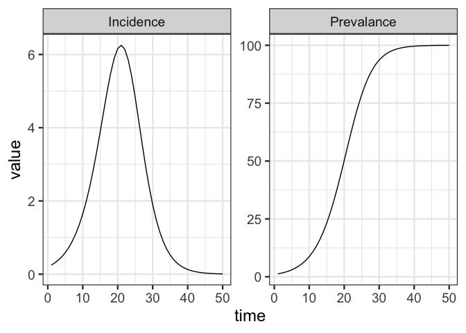

McMasterPandemic was developed to provide forecasts and insights to Canadian public health agencies throughout the COVID-19 pandemic. Much was learned about developing general purpose compartmental modelling software during this experience, but the pressure to deliver regular forecasts made it difficult to focus on the software itself. The goal of this macpan2 project is to re-imagine McMasterPandemic, building it from the ground up with architectural and technological decisions that address the many lessons that we learned from COVID-19 about software.
The Public Health Risk Sciences Division at the Public Health Agency of Canada uses macpan2 (for example, here).
Documentation
- Package reference
- Quick-start guide
-
TMBengine [specification document] - Project history and trajectory [slides]
- Instructional videos
Installation
The standard recommended way to install macpan2 is with the following command.
repos = c('https://canmod.r-universe.dev', 'https://cloud.r-project.org')
install.packages('macpan2', repos = repos)Many workflows with macpan2 also make use of four widely used packages, which you can install with the following command.
To get the latest development version of macpan2, or if the above command fails for some reason, an alternative command to install is the following.
This command requires the remotes package and assumes that your R environment is set up to compile C++ code contained in packages.
Reproducibility
The r-universe, which we use to distribute macpan2, suggests two approaches for projects in production that need to keep track of specific versions of macpan2: snapshots or renv.
To take the first approach, snapshots of macpan2 (and its dependency oor) can be obtained using the following download link.
Please see this documentation for instructions on customizing this download link.
The benefit of the first approach is that it doesn’t require users to be able to compile C++ code, whereas the second does. The benefit of the second approach is that it can be used to manage dependencies on all packages in your workflows. It might be possible to combine the two approaches to get the best of both worlds, but this isn’t tested.
Hello World
The following code specifies an SI model, which is the simplest model of epidemiological transmission.
library(macpan2)
si = mp_tmb_model_spec(
before = S ~ 1 - I
, during = mp_per_capita_flow(
from = "S" ## compartment from which individuals flow
, to = "I" ## compartment to which individuals flow
, rate = "beta * I" ## expression giving _per-capita_ flow rate
, abs_rate = "infection" ## name for _absolute_ flow rate = beta * I * S
)
, default = list(I = 0.01, beta = 0.2)
)
print(si)## ---------------------
## Default values:
## quantity value
## I 0.01
## beta 0.20
## ---------------------
##
## ---------------------
## Before the simulation loop (t = 0):
## ---------------------
## 1: S ~ 1 - I
##
## ---------------------
## At every iteration of the simulation loop (t = 1 to T):
## ---------------------
## 1: mp_per_capita_flow(from = "S", to = "I", rate = "beta * I", abs_rate = "infection")See this article for more example models with documentation.
Simulating from this model requires choosing the number of time-steps to run and the model outputs to generate. Syntax for simulating macpan2 models is designed to combine with standard data prep and plotting tools in R, as we demonstrate with the following code.
library(ggplot2)
library(dplyr)
(si
|> mp_simulator(time_steps = 50, outputs = c("I", "infection"))
|> mp_trajectory()
|> mutate(quantity = case_match(matrix
, "I" ~ "Prevalence"
, "infection" ~ "Incidence"
))
|> ggplot()
+ geom_line(aes(time, value))
+ facet_wrap(~ quantity, scales = "free")
+ theme_bw()
)
Product Management
The project board tracks the details of bugs, tasks, and feature development.